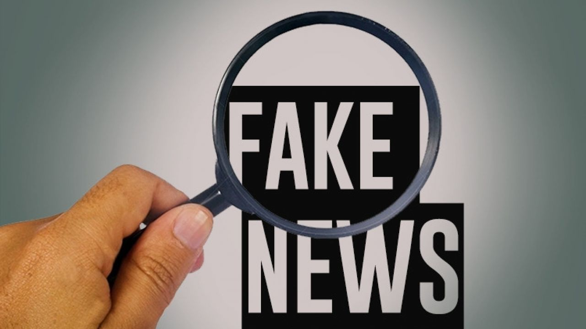

Com a popularização e acesso facilitado aos meios de comunicação, o conceito de fake news ganhou forma. Empregado às notícias fraudulentas que circulam nas mídias sociais e na Internet, o conceito é aplicado principalmente aos portais de comunicação online, como redes sociais, sites e blogs, que são plataformas de fácil acesso e, portanto, mais propícias à propagação de notícias falsas, visto que qualquer cidadão tem autonomia para publicar.
Em 2018, o Instituto Mundial de Pesquisa (IPSO) divulgou um estudo intitulado: “Fake news, filter bubbles, post-truth and trust (Notícias falsas, filtro de bolhas, pós-verdade e verdade)”, que revela dados importantes. De acordo com o levantamento, 62% dos entrevistados do Brasil admitiram ter acreditado em notícias falsas, valor acima da média mundial que é de 48%. Um outro estudo, consultado em junho de 2020, sobre o Relatório de Notícias Digitais do Instituto Reuters (Reuters Institute Digital News Report), mostrou que o WhatsApp é uma das principais redes sociais de discussão e troca de notícias no país, perdendo apenas para o Facebook. O levantamento apontou que 48% dos brasileiros que participaram da pesquisa usam o aplicativo como fonte de notícias, número bem superior comparado ao índice de países como: Austrália (8%), Reino Unido (7%), Canadá (6%) e Estados Unidos (4%).
As fake news crescem conforme o número de compartilhamentos, então é necessário repassar somente informações verídicas e sempre se questionar caso veja uma manchete duvidosa. Notícias falsas espalham-se rapidamente e apelam para o emocional do leitor/espectador, chamando atenção com títulos sensacionalistas e causando o consumo do material “noticioso” sem a confirmação da veracidade de seu conteúdo.
Consequências Das Fake News
O compartilhamento de informações fraudulentas tem grande consequências, apesar de parecer inofensivo. No Brasil, em 2014, a disseminação de uma fake news provou uma verdadeira tragédia. Na ocasião, uma mulher foi linchada até a morte por moradores da cidade de Guarujá, em São Paulo. Fabiane Maria de Jesus tinha 33 anos, era dona de casa, casada, mãe de duas crianças, e foi confundida com uma suposta sequestradora de crianças, cujo retrato falado, que havia sido feito dois anos antes, estava circulando nas redes sociais.
Outro caso famoso de disseminação de fake news é o do movimento anti vacinação. Indivíduos contrários ao uso de vacinas espalharam conteúdos falsos, alegando que as composições químicas das vacinas eram prejudiciais à população. As informações afirmavam que os medicamentos contra febre amarela, poliomielite, sarampo, microcefalia e gripe poderiam ser um risco para a saúde, provocando as respectivas doenças nas pessoas, quando vacinadas.
Uma das consequências da propagação dessas falsas informações foi o crescimento alarmante no número de casos de sarampo no Brasil, em 2018, o que acarretou numa campanha intensa realizada pelo Ministério da Saúde. A fim de combater as fake newsreferentes ao assunto, o órgão lançou propagandas e informativos de combate às falsas informações sobre vacinas em diferentes veículos de comunicação e nas redes sociais. Outro resultado da disseminação de tais notícias foi uma população desconfiada do sistema público de saúde e muitos outros órgãos que atendiam às campanhas de vacinação, além de uma considerável diminuição no número de pessoas imunizadas, algo extremamente perigoso em épocas de epidemias e surtos.

Tipos De Fake News
Já vimos que a questão sobre Fake News é muito mais complicada que nossos familiares compartilhando corrente no WhatsApp. Agora vamos dividir as Fake News em sete categorias.
Sátira ou paródia: não possui intenção de causar mal, mas tem potencial de enganar;
Falsa conexão: quando imagens, títulos e legendas dão falsas dicas do que realmente é o conteúdo;
Conteúdo enganoso: utilização enganosa de uma informação contra um assunto ou uma pessoa;
Falso contexto: conteúdo original compartilhado em um contexto falso;
Conteúdo impostor: quando afirmações falsas são atribuídas a fontes reais, geralmente pessoas;
Conteúdo manipulado: informação verdadeira manipulada para enganar;
Conteúdo fabricado: conteúdo completamente falso com o objetivo de gerar desinformação e causar algum mal.
Como combater?
E aí, como combater algo tão complexo? Essa resposta também não é fácil.
Um primeiro ponto é começar a buscar fontes de notícias com maior credibilidade. E isso passa geralmente por grandes portais de notícias, embora outros portais menores também estejam construindo um excelente jornalismo e possuam grande credibilidade. Aqui, esbarra-se em uma outra discussão, de que esses portais estão defendendo alguém, participam de alguma conspiração... Todo texto carrega uma subjetividade. Para isso, é necessário entender que todos esses portais de notícias possuem uma linha editorial, um pensamento econômico. E isso não faz deles menos confiáveis. A dica é, sempre que ler o conteúdo, leia suas entrelinhas, além de procurar diversas fontes.
Generalizando, existe também aquele portal que vai te dar o furo de notícia e outro que vai fazer uma análise completa do conteúdo. Se foi noticiado algum furo, aguarde uma análise mais completa para não sair espalhando fake news. E, por fim, confira sempre as agências de verificação. Alguns grandes jornais já incorporaram isso. Mas existem agências especializadas em checar fatos, como a Agência Lupa e o portal Aos Fatos. Esses são excelentes mecanismos para verificar as notícias, garantindo uma maior credibilidade ao conteúdo que você lê.